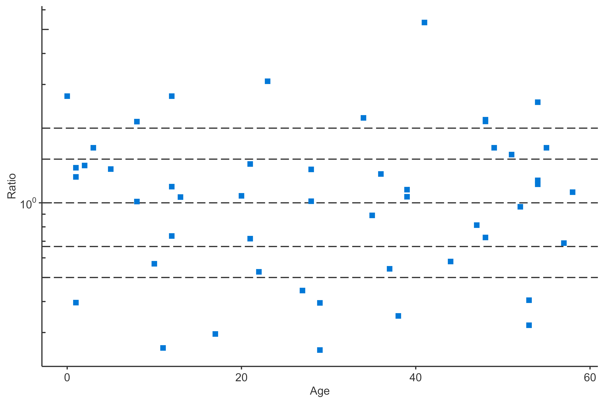
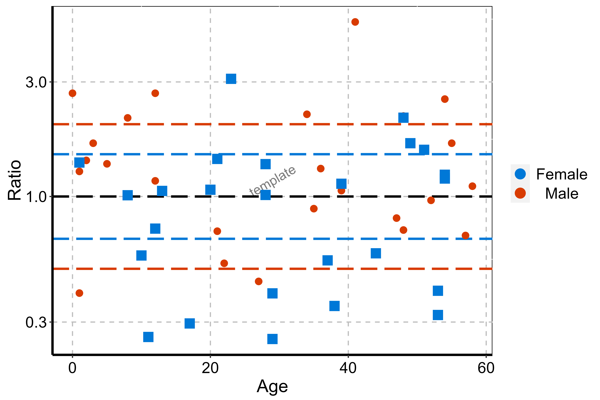
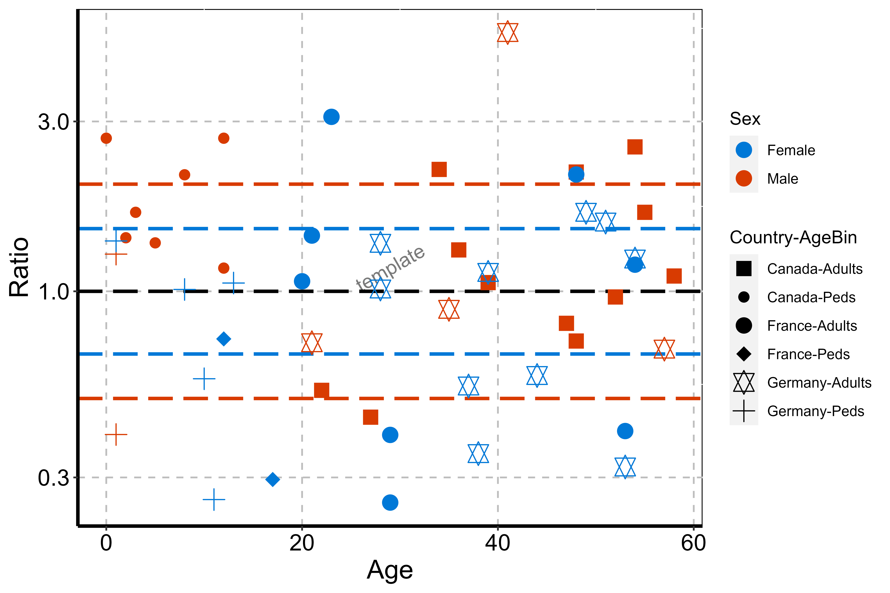
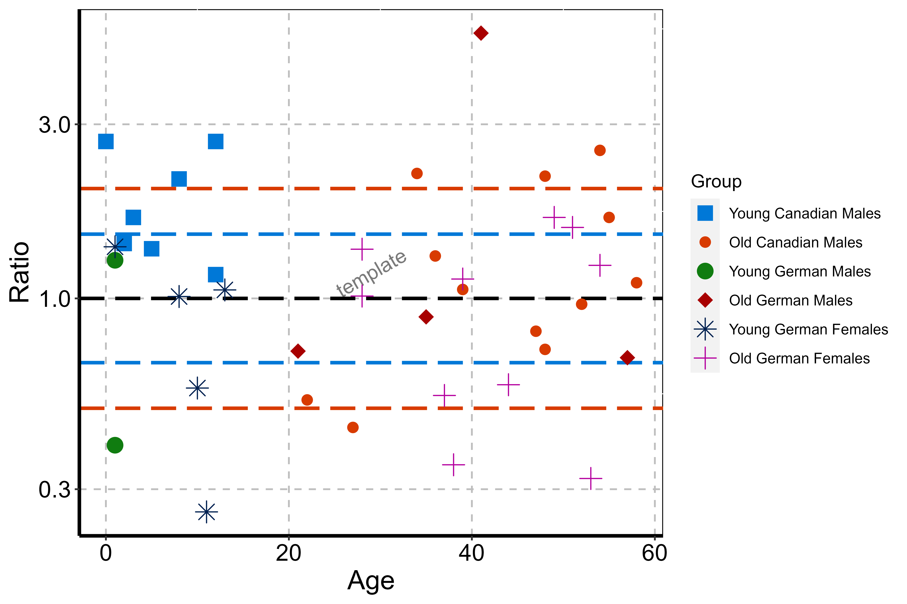
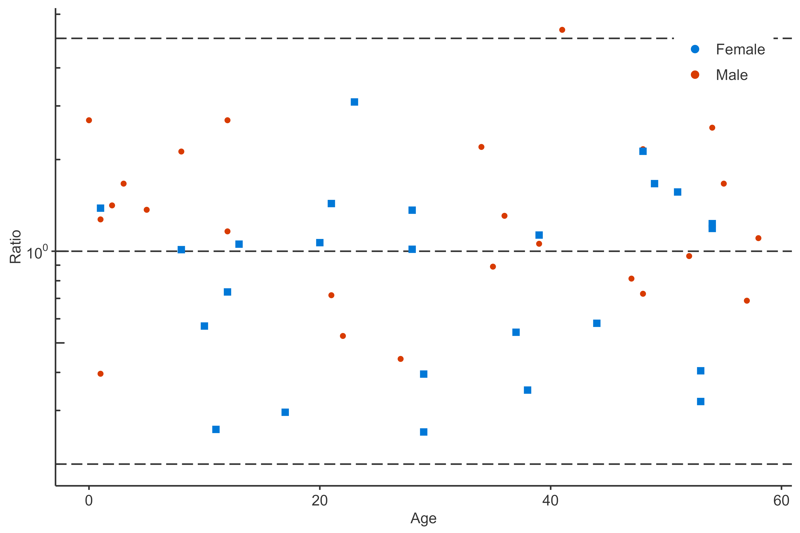

The following vignette aims at documenting and illustrating workflows for producing PK ratio plots using the tlf-Library.
This vignette focuses PK ratio plots examples. Detailed documentation on typical tlf workflow, use of AgregationSummary, DataMapping, PlotConfiguration, and Theme can be found in vignette("tlf-workflow").
The data showed in the sequel is available at the following path: system.file("extdata", "test-data.csv", package = "tlf"). In the code below, the data is loaded and assigned to pkRatioData.
# Load example
pkRatioData <- read.csv(
system.file("extdata", "test-data.csv", package = "tlf"),
stringsAsFactors = FALSE
)
# pkRatioData
knitr::kable(utils::head(pkRatioData), digits = 2)| ID | Age | Obs | Pred | Ratio | AgeBin | Sex | Country | SD |
|---|---|---|---|---|---|---|---|---|
| 1 | 48 | 4.00 | 2.90 | 0.72 | Adults | Male | Canada | 0.69 |
| 2 | 36 | 4.40 | 5.75 | 1.31 | Adults | Male | Canada | 0.19 |
| 3 | 52 | 2.80 | 2.70 | 0.96 | Adults | Male | Canada | 0.98 |
| 4 | 47 | 3.75 | 3.05 | 0.81 | Adults | Male | Canada | 0.59 |
| 5 | 0 | 1.95 | 5.25 | 2.69 | Peds | Male | Canada | 0.44 |
| 6 | 48 | 2.45 | 5.30 | 2.16 | Adults | Male | Canada | 0.07 |
A list of information about pkRatioData can be provided through metaData.
knitr::kable(data.frame(Variable = c("Age", "Obs", "Pred", "Ratio"),
Dimension = c("Age", "Clearance", "Clearance", "Ratio"),
Unit = c("yrs", "dL/h/kg", "dL/h/kg", "")))| Variable | Dimension | Unit |
|---|---|---|
| Age | Age | yrs |
| Obs | Clearance | dL/h/kg |
| Pred | Clearance | dL/h/kg |
| Ratio | Ratio |
plotPKRatio
The function plotting PK ratios is: plotPKRatio(). Basic documentation of the function can be found using: ?plotPKRatio. The typical usage of this function is: plotPKRatio(data, metaData = NULL, dataMapping = NULL, plotConfiguration = NULL). The output of the function is a ggplot object. It can be seen from this usage that only data is a necessary input. Default set ups are used for metaData, dataMapping and plotConfiguration within the call of plotPKRatio. For instance, if dataMapping is not provided, smart mapping will check if data contains "x" and "y" columns. If the data has only two columns not named "x" and "y", it will assume the first one should be plot in x-axis and the second in y-axis. Then, PKRatioPlotConfiguration is initialized if not provided, defining a standard configuration with PK Ratio Plot as title, the current date as subtitle and using predefined fonts as defined by the current theme.
The minimal example can work using directly the function plotPKRatio(data = pkRatioData[, c("Age", "Ratio")]).
plotPKRatio(data = pkRatioData[,c("Age", "Ratio")])
dataMapping
For PK ratio, the dataMapping class PKRatioDataMapping includes 4 fields: x, y, groupMapping and lines. x and y define which variables from the data will be plotted in X- and Y-axes, groupMapping is a class mapping which aesthtic property will split which variables, and lines defines horizontal lines performed in PK ratio plots.
groupMapping
Some variables can be used to cluster the data. To this end, PKRatioDataMapping objects include GroupMapping objects that can define how to cluster based on a variable or a data.frame. As illustrated below, most of the time, the direct input of color and shape is faster to define such objects. Consequently, the following examples are identical:
# Two-step process
colorMapping <- GroupMapping$new(color = "Sex")
dataMappingA <- PKRatioDataMapping$new(x = "Age",
y = "Ratio",
groupMapping = colorMapping)
print(dataMappingA$groupMapping$color$label)
#> [1] "Sex"
# One-step process
dataMappingB <- PKRatioDataMapping$new(x = "Age",
y = "Ratio",
color = "Sex")
print(dataMappingB$groupMapping$color$label)
#> [1] "Sex"Then, in this example, plotPKRatio can use the groupMapping to split the data by “Gender” and associate different colors to each “Gender”:
plotPKRatio(data = pkRatioData,
dataMapping = dataMappingB)
Multiple groupMappings can be performed for PK ratio: data can be regrouped by color, shape and/or size. The next example uses 2 groups in the groupMapping: One group splits “Gender” by color, the other splits shape by “Amount” and “Compound”.
dataMapping2groups <- PKRatioDataMapping$new(x = "Age",
y = "Ratio",
color = "Sex",
shape = c("Country", "AgeBin"))
plotPKRatio(data = pkRatioData,
dataMapping = dataMapping2groups)
The last examples uses another feature available in the groupMapping class. The class can be initilized using a data.frame where the last column of the data.frame will be used to split the data. In the following example, the data.frame is the following:
| AgeBin | Country | Sex | Group |
|---|---|---|---|
| Peds | Canada | Male | Young Canadian Males |
| Adults | Canada | Male | Old Canadian Males |
| Peds | Germany | Male | Young German Males |
| Adults | Germany | Male | Old German Males |
| Peds | France | Male | Young French Males |
| Adults | France | Male | Old French Males |
| Peds | Canada | Female | Young Canadian Females |
| Adults | Canada | Female | Old Canadian Females |
| Peds | Germany | Female | Young German Females |
| Adults | Germany | Female | Old German Females |
| Peds | France | Female | Young French Females |
| Adults | France | Female | Old French Females |
The dataMapping introduced below will split the color and shape using the data frame.
dataMappingDF <- PKRatioDataMapping$new(x = "Age",
y = "Ratio",
color = groupDataFrame,
shape = groupDataFrame)
plotPKRatio(data = pkRatioData[!(pkRatioData$Country %in% "France"), ],
dataMapping = dataMappingDF)
lines
In PK ratio examples, usually horizontal lines are added allowing to flag values in and out of the [0.67-1.5] as well as [0.5-2.0] ranges. The value mapping these horizontal lines was predefined as a list: “pkRatioLine1” is 1, “pkRatioLine2” is c(0.67, 1.5) and “pkRatioLine3” is c(0.5, 2). Consequently, for any default PKRatioDataMapping, you have:
linesMapping <- PKRatioDataMapping$new()
linesMapping$lines
#> $pkRatio1
#> [1] 1
#>
#> $pkRatio2
#> [1] 1.5000000 0.6666667
#>
#> $pkRatio3
#> [1] 2.0 0.5Overwriting these value is possible by updating the value either when initializing the mapping or afterwards. For instance:
linesMapping <- PKRatioDataMapping$new(lines = list(pkRatio1 = 1, pkRatio2 = c(0.2, 5)),
x = "Age",
y = "Ratio",
color = "Sex")
plotPKRatio(data = pkRatioData,
dataMapping = linesMapping)
The qualification of the PK Ratios can be performed using getPKRatioMeasure. This function return a data.frame with the PK ratios within specific ranges. As a default, these ranges are within 1.5 and 2 folds. However, they can be updated using the option ratioLimits = when running the function.
# Test of getPKRatioMeasure
PKRatioMeasure <- getPKRatioMeasure(data = pkRatioData[,c("Age", "Ratio")])
knitr::kable(x = PKRatioMeasure,
caption = "Qualification of PK Ratios")| Number | Ratio | |
|---|---|---|
| Points Total | 50 | NA |
| Points within 1.5-fold | 24 | 0.48 |
| Points within 2-fold | 32 | 0.64 |
To configure the plot properties, PKRatioPlotConfiguration objects can be used. They combine multiple features that set the plot properties. PK ratio plot consists in lines and points. As illustrated in the vignette related to PlotConfiguration objects and Theme, you can tune the aesthetic maps and their selections (see vignette("plot-configuration") and vignette("theme-maker")). Colors, shapes and size of the PK ratio scatter points can be tuned in the plotConfiguration points field. Likewise, colors, linetype and size of the PK ratio lines can be tuned in the plotConfiguration lines field.